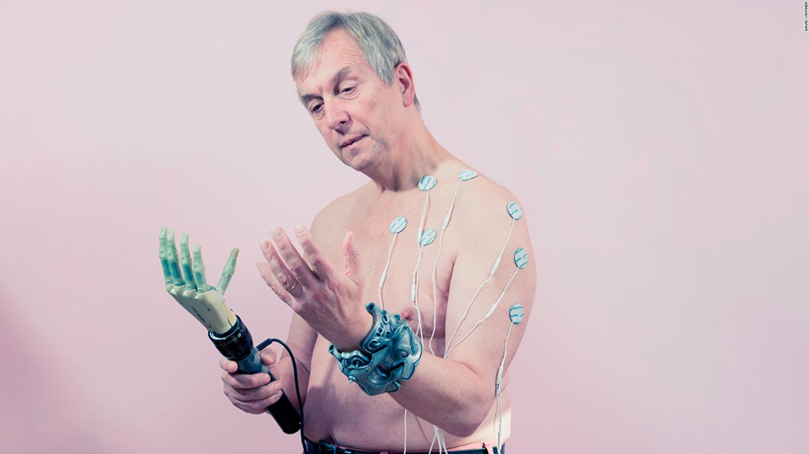

« Le transhumanisme est un mouvement culturel et intellectuel international prônant l'usage des sciences et des techniques afin d'améliorer la condition humaine par l'augmentation des capacités physiques et mentales des êtres humains et de supprimer le vieillissement et la mort. »
Il y a eu beaucoup de progrès au cours des dernières années, une croissance rapide concernant l'augmentation humaine, par exemple, les membres artificiels ont permis aux gens de marcher et de fonctionner normalement, les bras ont permis aux gens de travailler, de se serrer dans leurs bras de manière normale. On leur a donné la capacité de mener une vie bien plus remplie qu'autrement. Les appareils auditifs ont permis d'avoir des conversations, un dialogue qui n'aurait peut-être pas été possible autrement. La chirurgie oculaire au laser a amélioré la vue sans l'utilisation de lunettes ou de lentilles. Les vaccins ont considérablement éliminé certaines maladies qui auraient autrement anéanti des villes et des pays (par exemple, notre vaccin Covid). L'idée de « wearables », l'utilisation accrue d'implants et de micropuces, l'augmentation du corps produira un type de super être. Nous souhaiterions un être humain plus efficace, plus fort, plus intelligent.
Il y a beaucoup d'avantages et d'inconvénients à l'évolution du mouvement transhumaniste. Julian Huxley, biologiste et philosophe a lancé le postulat selon lequel les humains peuvent s'améliorer grâce à la science et à la technologie et, au fil du temps, nous avons récolté les fruits de la science et de la technologie. Nous avons parcouru un long chemin dans ce spectre, comme je l'ai mentionné avec les appareils auditifs, membres artificiels et chirurgie oculaire au laser, etc. Tous nos appareils intelligents nous ont permis d'accéder instantanément à l'information, de transformer et de visualiser et même de rêver, en mélangeant essentiellement les humains et les machines pour créer un type de super être.
Cependant, de l'autre côté du spectre, pouvons-nous et devons-nous parvenir à un monde où la maladie n'existe pas, où nous sommes tous suralimentés intellectuellement, où la mémoire peut être altérée. Le génie génétique pour améliorer l'intelligence et la longévité peut comporter des aspects à la fois moraux et éthiques qui n'ont pas été entièrement compris. Notre mortalité est la base de notre existence humaine ? Si nous étendions artificiellement, qu'est-ce que cela impliquerait économiquement ? Tout le monde s'offrirait-il un tel luxe ? Cela peut créer des conflits et des déséquilibres dans notre monde tel que nous le connaissons.
Il y a beaucoup de questions éthiques qui doivent être abordées, notre existence humaine existe depuis plus de 200 000 ans, les gens périssent, d'autres naissent. La nature a mêlé la vie et la mort, l'été et l'hiver où les choses fleurissent puis meurent. Dieu, pour ceux qui vivent par la religion dans le monde ne peuvent pas être altérés, il est le créateur de notre terre et la nature son allié bienvenu. De plus, notre mortalité est ce qui nous maintient humains, notre fragilité est la façon dont nous avons été créés.
Devons-nous ? Devrions-nous? Être l'instrument pour changer notre évolution à travers nos avancées dans ces domaines ?
Entrée par Joseph Nasr
Référence : MCKIE, Robin. « No death and an enhanced life: Is the future transhuman? » dans The Guardian, 6 mai 2018, URL : https://www.theguardian.com/technology/2018/may/06/no-death-and-an-enhanced-life-is-the-future-transhuman (consultée le 2 novembre 2021)